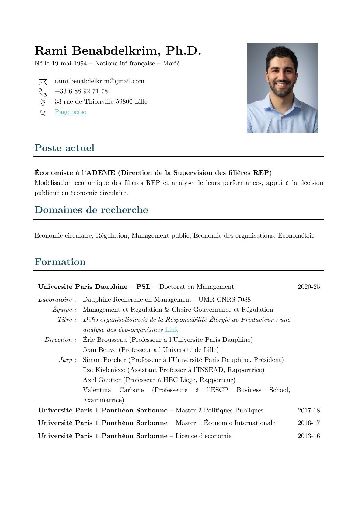

Curriculum Vitae
Docteur en management de l’Université Paris Dauphine–PSL. Économiste à l’ADEME et chercheur associé à la Chaire Gouvernance et Régulation.
Document

Lire en ligneParcours
Expériences professionnelles
-
2026 – aujourd’hui
Économiste ADEME — Direction de la supervision des filières REP (DSREP)
Modélisation économique des filières REP et analyse de leurs performances, en appui à la décision publique en économie circulaire.
-
2025
Chercheur post-doctorant Mines Paris – PSL — Centre de Gestion Scientifique
-
2021 – 2024
Chercheur doctoral (contrat CIFRE) EcoLogic France
-
2018
Chargé d’études économiques (stage) CRAPS
Formation
-
2020 – 2025
Doctorat en management Université Paris Dauphine–PSL — Dauphine Recherche en Management (UMR CNRS 7088), équipe Management et Régulation, Chaire Gouvernance et Régulation
Défis organisationnels de la Responsabilité élargie du producteur : une analyse des éco-organismes
Direction & juryFermer
- Direction
- Éric Brousseau, Professeur, Université Paris Dauphine–PSL
Jean Beuve, Professeur, Université de Lille - Jury
- Simon Porcher, Professeur, Université Paris Dauphine–PSL (Président)
Ilze Kivleniece, Assistant Professor, INSEAD (Rapportrice)
Axel Gautier, Professeur, HEC Liège (Rapporteur)
Valentina Carbone, Professeure, ESCP Business School (Examinatrice)
-
2017 – 2018
Master 2 Politiques publiques Université Paris 1 Panthéon-Sorbonne
-
2016 – 2017
Master 1 Économie internationale Université Paris 1 Panthéon-Sorbonne
-
2013 – 2016
Licence d’économie Université Paris 1 Panthéon-Sorbonne
Domaines de recherche
Économie circulaireRégulationManagement publicÉconomie des organisationsÉconomie publiqueÉconométrie
Les publications et documents de travail sont présentés sur la page Recherche.
Enseignement
Enseignements
Université Paris Dauphine–PSL
-
2023 – 2025
Business Model Thinking M2 Management Textile · CM 12 h/an · en anglais
-
2024 – 2025
Fondamentaux de la stratégie L3 Management · TD 32 h/an · en français
IAE Lille
-
2026
Méthodologie quantitative M1 Management des achats et de la supply chain · CM 18 h/an · en français
-
2026
Méthodologie quantitative M1 Management des business units (FA) · CM 18 h/an · en français
Université Paris 1 Panthéon-Sorbonne
-
2019 – 2024
Théorie des organisations L3 Économie · TD 45 h/an · en français
-
2019
Statistiques L1 AES · TD 32 h/an · en français
-
2019
Économie politique L1 Capacité en droit · CM 32 h/an · en français
ENSTA Paris
-
2020
Économie contemporaine L3 Ingénieur · CM 32 h/an · en français
Encadrement de mémoires
-
2025 – 2026
Régis Ouchoumaré M2 ENAMOMA, Université Paris Dauphine–PSL
-
2023 – 2024
Essia Rassa M2 Politiques publiques, Université Paris 1 Panthéon-Sorbonne
-
2021 – 2022
Shaïnès Foughali M2 Politiques publiques, Université Paris 1 Panthéon-Sorbonne
Communications
Conférences et séminaires
Conférences internationales
-
2025
22nd Institutional and Organizational Economics Academy (IOEA) Corse, France
-
2024
5th Symposium on Circular Economy and Sustainability La Canée, Grèce
-
2024
26th International Network for Economic Research (INFER) La Canée, Grèce
-
2024
21st Institutional and Organizational Economics Academy (IOEA) Corse, France
-
2023
20th Institutional and Organizational Economics Academy (IOEA) Corse, France
-
2022
19th Institutional and Organizational Economics Academy (IOEA) Corse, France
Conférences nationales
-
2025
20e Congrès du RIODD (Réseau international de recherche sur les organisations et le développement durable) Toulouse
-
2024
19e Congrès du RIODD Bruxelles
-
2023
2e Conférence annuelle Ressources naturelles, économie locale (RENEL) Metz
-
2022
1re Conférence annuelle Ressources naturelles, économie locale (RENEL) Metz
Séminaires et présentations invitées
-
2026
- Séminaire de recherche — HEC Liège
- Comité scientifique de la Chaire BALI — ESMOD, Paris
- Séminaire d’équipe LUMEN — IAE Lille
-
2025
- Journée d’étude « La responsabilité élargie des producteurs : état des lieux et futur de la recherche », ADEME et REP’ROGRAM — Le Mans Université
- Printanière recherche « Créer, relier, transformer : la filière en mouvement » — Université Paris Dauphine–PSL
- Séminaire doctoral en économie néo-institutionnelle — IAE Paris
-
2024
- PhD Help Seminar — Université Paris Dauphine–PSL
- Séminaire interne de la Chaire Gouvernance et Régulation (deux interventions) — Université Paris Dauphine–PSL
-
2023
- Séminaire interne de la Chaire Gouvernance et Régulation (deux interventions) — Université Paris Dauphine–PSL
-
2022
- Séminaire interne de la Chaire Gouvernance et Régulation — Université Paris Dauphine–PSL
- Atelier doctoral Management et Organisation — Université Paris Dauphine–PSL
-
2021
- Séminaire Économie des partenariats public-privé — IAE Paris
- Atelier doctoral Management et Organisation — Université Paris Dauphine–PSL
-
2020
- Public Governance Working Group — Université Paris Dauphine–PSL
- Séminaire interne de la Chaire Gouvernance et Régulation — Université Paris Dauphine–PSL
Interventions grand public et médias
-
2026
Webinaire INTERREG NPA THREADs
-
2026
50e anniversaire de Dauphine Recherche en Management Paris
-
2025
Ministère de l’Économie — Direction générale des entreprises (DGE) Paris
-
2025
Webinaire Écoconception n° 15, EcoLogic France
-
2024
Présentation de la Chaire Gouvernance et Régulation (YouTube)
-
2022
Assemblée générale de FEDEREC Paris
Compétences
- Langues
- Français (langue maternelle), anglais (courant)
- Analyse
- R, Stata, LaTeX
- Design et web
- Photoshop, Illustrator, InDesign, WordPress, Strapi
- Bureautique
- Microsoft Office